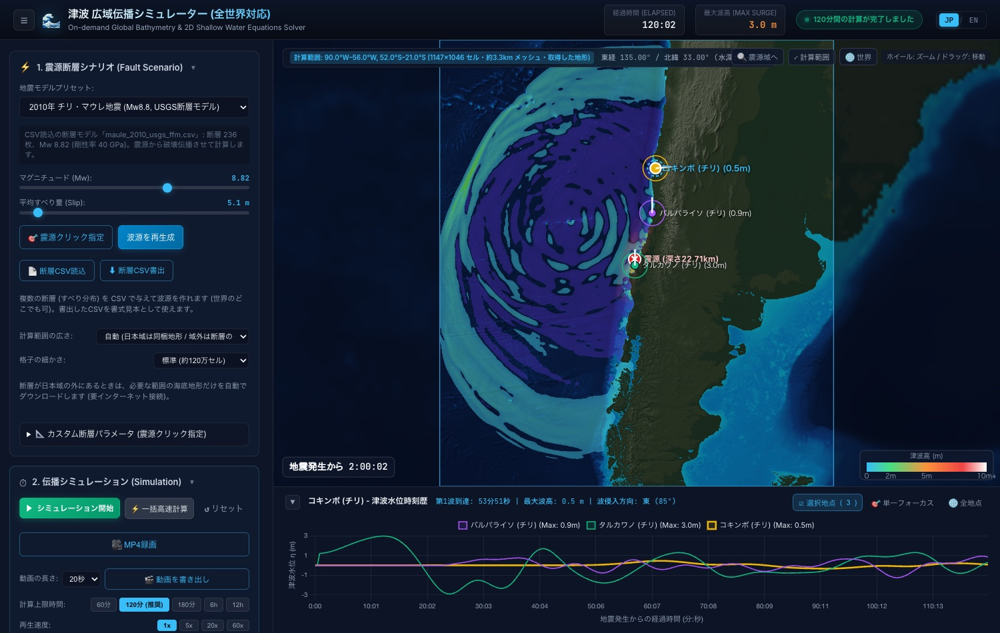
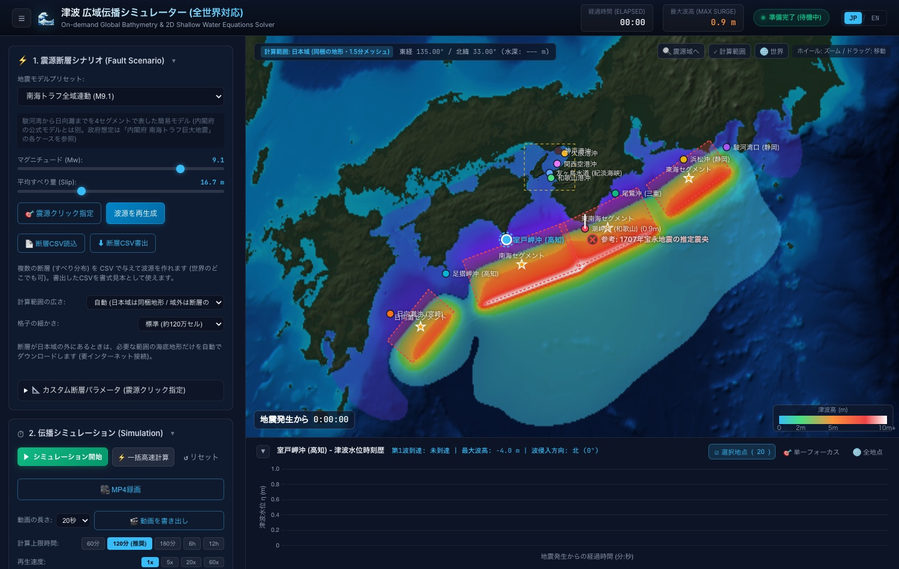
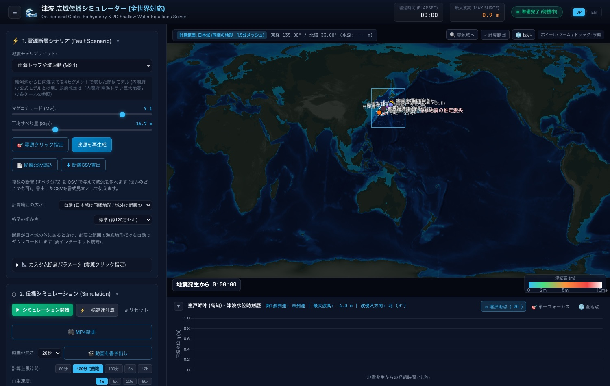
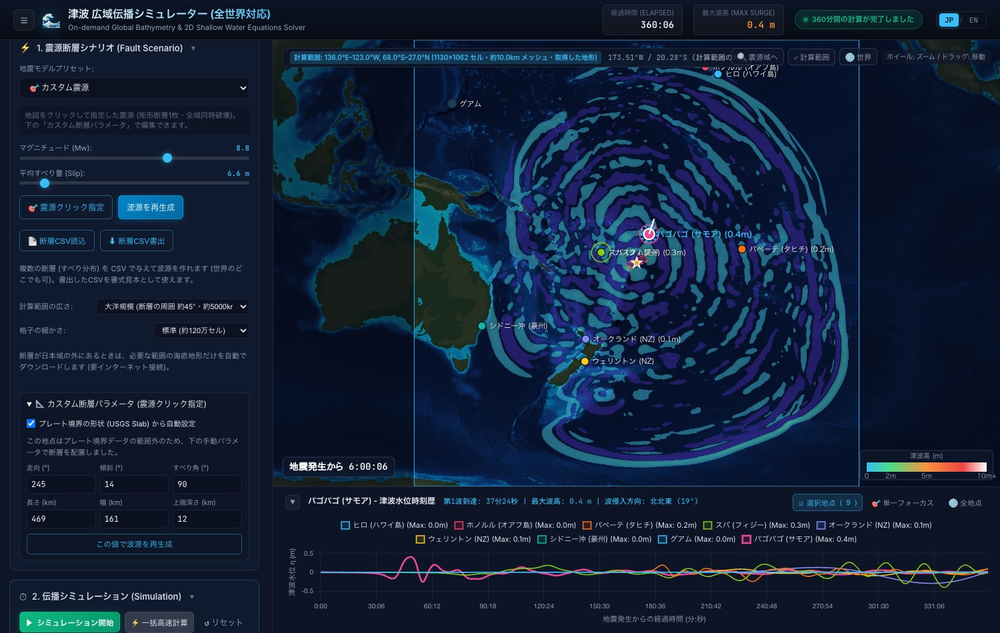

世界のどこでも、
断層CSVから津波の広がりを計算する。
断層パラメータCSV、または地図のクリックで震源を指定すると、Okada弾性転位モデルと2次元長波方程式（浅水方程式）で津波の伝播を計算します。全世界の海底地形を事前に読み込むことはせず、震源を選んだ時点でその周囲の地形だけをダウンロードします。

4つの主な機能
世界のどこの震源でも計算できること、地形を必要な分だけ取得すること、日本域は同梱の地形でそのまま計算できること、結果をCSVと動画で書き出せることが特徴です。
世界のどこでも、断層CSVから
各断層の位置・深さ・大きさ・走向・傾斜・すべり角・すべり量を1行1枚で書いたCSV（最大5,000枚、震源と破壊伝播速度も指定可）を読み込むと、その断層群で波源を作ります。USGSの有限断層モデルをこの形式に変換するスクリプトを同梱。地図をクリックして、マグニチュードに応じた大きさの断層を1枚置くこともできます。
海底地形は必要な範囲だけ取得
全世界の地形を同梱すると重すぎるため、震源を選んだ時点で、断層の周囲の地形だけを公開の標高タイルからダウンロードして計算用の格子を作ります。範囲の広さ（断層の周囲 約6°〜45°）と格子のセル数（約50万〜250万）を選べ、日付変更線をまたぐ範囲にも対応。取得したタイルは保存され、同じ範囲は再取得しません。
物理モデルに基づく計算
Okada (1985) の弾性転位モデルで断層運動による海底の隆起・沈降を求め、Arakawa C格子上の2次元長波方程式を、緯度ごとの格子間隔補正と半陰解法のマニング摩擦で解きます。4次Shapiroフィルターで格子規模の数値ノイズを除き、外周の吸収層で計算範囲の端からの反射を防ぎます。日本域は同梱の1.5分メッシュ（大阪湾は15秒）でそのまま計算できます。
観測地点のCSV出力と動画保存
世界の主要46地点と日本の20地点を内蔵し、計算範囲に入る地点の水位・流速・流向を時系列で記録。地図をクリックして任意の地点も追加できます。地震発生（t=0）からの全期間をCSVで出力でき、計算結果は選んだ長さ（10〜60秒）のMP4動画に書き出せます。画面は日本語・英語を切り替えられます。
日本域は同梱、それ以外は震源に合わせて取得
断層が同梱の日本域に収まるときはダウンロードなしで計算し、域外のときだけ必要な範囲の地形を取得して切り替えます。
起動直後から使える日本全国の地形
東経125.6°〜152.9°・北緯22.0°〜48.0°を1.5分メッシュ（約2.8km）で同梱。大阪湾・紀伊水道北部は15秒メッシュの入れ子格子で計算します。南海トラフ・東北沖などのプレセットと、既定の沖合20地点をそのまま使えます。

震源の周囲だけを取得して格子を作る
「🌐 世界」で全体を表示し、震源をクリックするか断層CSVを読み込むと、水色の枠の範囲の地形をダウンロードして計算に切り替わります。枠の外は概略の世界地図（0.25°）を背景として表示します。

計算範囲の広さと格子
| 設定 | 取得する範囲 | 格子間隔の目安 (約120万セル) | 向いている用途 |
|---|---|---|---|
| 自動 | 日本域に収まれば同梱地形、域外は断層の周囲 約12° | 日本域 約2.8km / 域外 約3km | 通常はこのまま |
| 狭い / 標準 | 断層の周囲 約6° / 約12°（約670km / 約1300km） | 約2〜3.5km（下限は1分メッシュ） | 震源に近い沿岸の到達時刻・波高 |
| 広い / 大洋規模 | 断層の周囲 約25° / 約45°（約2800km / 約5000km） | 約6〜10km | 遠地への伝播の概観（6時間・12時間の計算） |
計算例
同梱の断層CSVと震源クリックで実際に計算したときの、計算範囲と格子の例です。
※v1.0.0 で「格子の細かさ: 標準」として計算したときの値です。Mw は断層CSVのすべり量と面積から剛性率40GPaで求めた値で、公表値とは少し異なることがあります。

トンガ海溝付近をクリックして置いた震源（Mw8.8）を、大洋規模の範囲（東経136°〜西経123°、日付変更線をまたぐ）で6時間計算した画面
波の広がりの簡易デモ
クリックした場所から波が広がる様子を、簡易な2次元波動方程式で表示するデモです。実際のアプリとは異なり、断層モデルや実際の海底地形は使っていません（上ほど浅い海として速度だけを変えています）。
入手方法
macOS のデスクトップ版を製品ページから入手できます。日本域の外を計算するときは、地形を取得するためインターネット接続が必要です。
macOS デスクトップ版
Tauri v2 製のデスクトップアプリ。計算はすべてPC内で行います。CSV・MP4動画は「ダウンロード」フォルダに保存。
ご利用上の注意
計算方法と地形データに由来する制限です。結果は伝播の様子を把握するための目安としてお使いください。
遠地津波の精度
コリオリ力と波の分散を含まない長波方程式です。大洋を横断する津波の到達時刻・波高は目安で、海岸での津波高・遡上高は沖合の計算値より大きくなります。
地形データ
日本域の外の地形は Mapzen Terrain Tiles（AWS Open Data。海域は ETOPO1 の1分メッシュ）を使います。湾や海峡などの細かい地形は表せません。計算範囲は南北 約78°まで、震源は約72°までです。
震源クリック時の断層の向き
プレート境界の形状（USGS Slab）からの走向・傾斜の自動設定は日本周辺だけです。それ以外の地域では「カスタム断層パラメータ」で走向・傾斜・すべり角を入力してください。